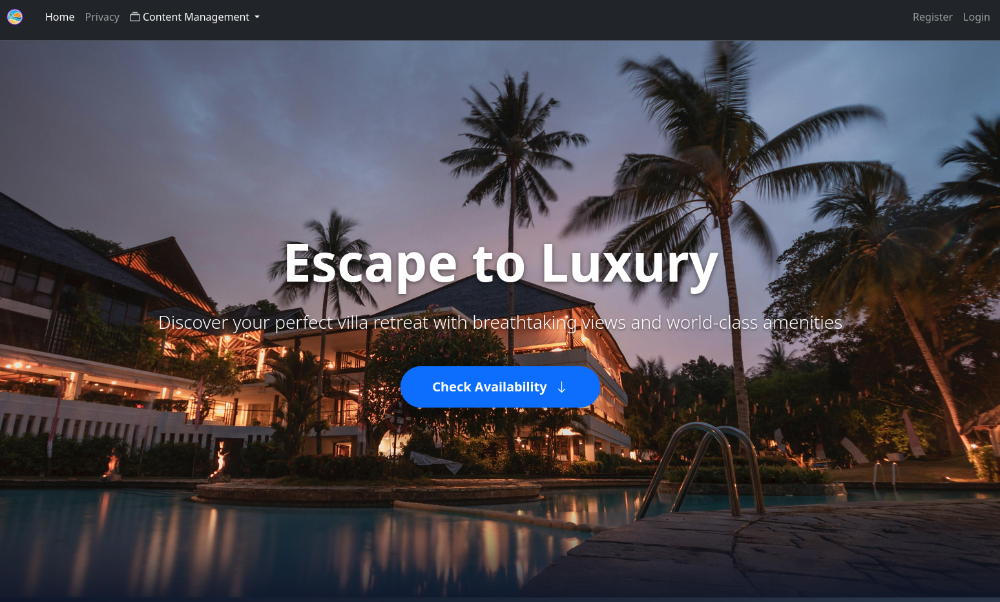
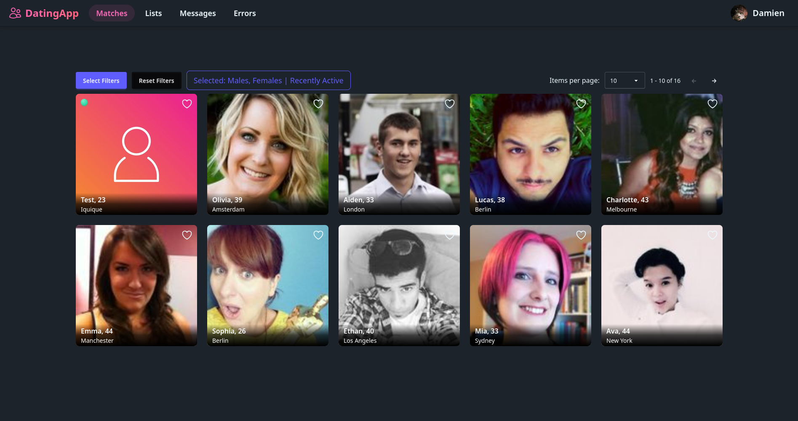

About Me
Arthur Evans | 23 | Located in the Isle Of ManI am a fullstack web developer with 2 years of industry experience. My main stack lies in .NET, Angular, TypeScript & C#, as well as SQLServer and PostgreSQL. During my time working for a team I have learned how to build data visualizations using chart.js and ApexChartsJS, components with TailwindCSS, and setting up tables for products with pagination, filtering, sorting, and ordering, as well configuring an exporting pipeline to generate csv files that can later be read by Excel. I have worked with both API, and MVC structures using Razor views.
Outside of work, I have recently finished two major projects: Resort listing website and a dating website. The purpose of the first site was to learn clean architecture with the onion architecture style. Additionally, I've learned how to handle payments using the Paddle API as, unfortunately, Stripe API is not available for the Isle of Man. Lastly, I have developed an admin dashboard showing data visualizations regarding the resorts using ApexCharts. With the dating website, my main focus was on strengthening my Angular skills, as well as learning SignalR to handle Websockets so that I can do real-time chat updates, as well as learning how to deploy an app onto Azure.
Feel free to check out the projects below!

Resort Website
A full-stack villa booking platform built with .NET MVC and Onion Architecture, featuring a public booking flow with real payment integration via the Paddle API, an admin dashboard with live analytics using ApexCharts, and full CRUD management for villas, rooms, and amenities.
- .NET
- C#
- Razor
- PostgreSQL
- Bootstrap
- JQuery
- Paddle

Realtime Dating App
A full-stack dating app built with .NET Web API and Angular, featuring real-time messaging and presence tracking via SignalR, role-based authentication with ASP.NET Identity, and an admin panel for user and role management. Members can browse and filter profiles, send likes, and chat instantly without page refresh.
- .NET
- C#
- Angular
- TypeScript
- PostgreSQL
- SignalR
- TailwindCSS
- Azure